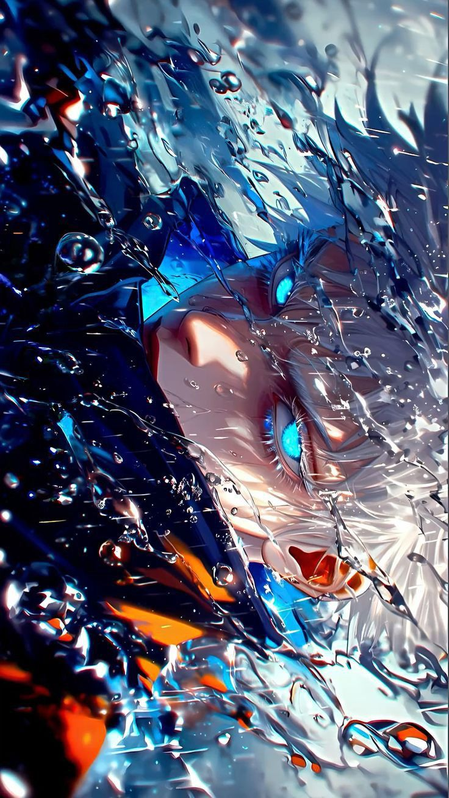
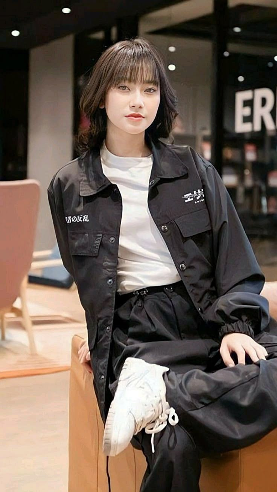
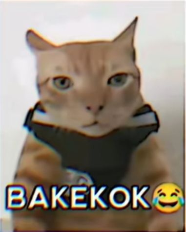

Foto ini menampilkan sebuah karakter anime atau manga dengan visual yang sangat dramatis dan intens. Karakter ini memiliki rambut putih atau perak yang terlihat basah dan acak-acakan, seolah-olah terkena percikan air atau hujan. Fokus utama dari foto ini adalah sepasang mata biru yang sangat cerah dan bersinar, yang memberikan kesan kuat dan misterius. Latar belakang dan detail di sekitar wajahnya penuh dengan percikan air, yang semakin menambah kesan dinamis dan artistik. Karakter ini terlihat mengenakan pakaian berwarna gelap, mungkin jubah atau jaket, dengan aksen oranye.

Foto ini menunjukkan seorang perempuan muda yang duduk santai dengan gaya busana kasual kontemporer. Ia memiliki rambut sebahu berwarna cokelat gelap dengan poni. Perempuan ini mengenakan jaket kemeja hitam yang longgar, dipadukan dengan kaus putih polos di dalamnya dan celana panjang hitam yang juga longgar. Sepatu yang ia kenakan berwarna putih, serasi dengan kausnya. Pose duduknya terlihat santai, dan ekspresi wajahnya tenang. Latar belakang foto ini adalah interior sebuah ruangan, dengan sofa dan perabot lain yang terlihat modern.

Foto ini adalah sebuah meme kucing yang lucu dan viral. Kucing berbulu oranye kecoklatan ini tampak memiliki ekspresi wajah yang datar dan sedikit sinis, seolah-olah sedang menunjukkan ketidaksetujuan atau keheranan. Kucing ini mengenakan sebuah harness atau rompi hitam yang membuatnya terlihat seperti sedang berpose untuk sebuah foto. Di bagian bawah foto, terdapat teks berwarna putih besar dengan tulisan "BAKEKOK" dan emotikon tertawa terbahak-bahak, yang merupakan slang populer di media sosial. Visual ini sangat umum digunakan untuk menunjukkan reaksi lucu terhadap situasi yang konyol atau tidak terduga.
Kunjungi website resmi kami: di sini